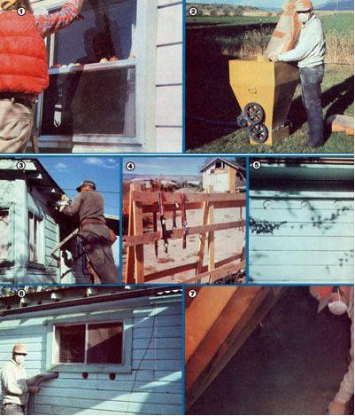

Ceiling insulation and storm windows are about the fastest-moving home energy conservation products around. And-even if you start on a shoestring-you can install such household improvements, learning the trade as you go, and earn as much as $400 for a single day's activity!
Because of today's rapidly increasing home heating and cooling costs, most folks are quite willing to "invest" in products that can cut down on their energy needs. I discovered this huge (and largely untapped) market back in 1977, when- after being unemployed for four months-I started my own home insulation business ... a venture which now enables me to earn a net profit of about $1,000 for every 30 hours I work! Such an enterprise requires little or no initial investment and can provide an immediate -and impressiveincome. So if you need e xtra cash now, don't pass up this article!
My first two ceiling insulation jobs netted me a total of $170 profit for one day's work! I had no equipment of my own and had never done insulation work before. My brother gave me the necessary instructions, and I got the cellulose insulation- on credit and at a slightly reduced price-from a farm products store. The firm's special machine, which is used to blow the material into attics and walls, was lent to me free of charge ... and I transported my supplies to the job site in a borrowed pickup truck!
The first thing you'll have to understand, in order to sell an insulation job, is the term "R-factor" . . . which refers to the amount of heat lost or gained through a structure's attic or walls over a period of time. (It's estimated that 55% of a ' home's heat loss takes place through the attic, and the other 45% through walls, windows, and doors.) The higher the R-factor, the more efficient the insulation.
In most parts of the country, a factor of R-19 to R-22 is the very minimum recommended for ceilings, while a factor of R-11 is considered to be "rock bottom" for walls. (An R-19 attic will contain about 4 inches of insulation ... an R-22, about 6 inches ... an R-24, about 6-1/2 inches ... an R-32, about 8 inches ... and an R-40 about 10-1/2 inches.)
Since many suppliers carry only cellu blow-in insulation and a machine to 'apply the material, you should know the many selling points of this substance:
Cellulose is less expensive, but has a -higher R-factor, than any other blow-in insulation on the market today ... it has good sound-deadening qualities ... a bag of cellulose weighs 30 pounds, while bags of other types of insulation may weigh less ... you can light a match to high-quality cellulose, and-though it might burn while the flame is applied-the material will quickly extinguish itself as soon as the match is removed ... cellulose retains its insulating properties over the years ... it's not itchy, so the material isn't a problem for anyone who might want to work in the attic after it's installed ... and, finally, most cellulose is UL approved and meets all FHA specifications (make sure that your choice has these stamps of approval).
If you stress the amount of material you'll put into a customer's attic-and are very knowledgeable about your insulation's R-factor properties-you'll more than likely land lots of contracts!
Before you can give an estimate on an attic insulation job, you'll have to determine the area of the surface to be insulated. To do this, simply multiply the attic floor's length by its width. (I've found that letting a prospective customer help with this task will often boost my chance of making a sale.)
Your supplier can give you an idea of how much material you'll need to fill an attic 4, 6, 8, or 10 inches deep. This infor. mation is also stamped on bags of highquality cellulose (which is the only kind you should ever use). For example, the manufacturer will Rate that- to achieve a heavy 4inch fill-you'll need 30 bags for every 1,000 square feet.
Assume the sacks cost $5.00 each. Your material cost-for our sample 1,000-square-foot attic-will be $5.00 times 30 bags, or $150.You can then decide how much profit you need to make on the job and add that amount to your costs. If you want to make a $100 profit, add $130 or $140 ... the extra money will pay your helper's salary.
Always quote the full price: "I can do the job for $280." Don't break your job bid down to separate your material costs from your wages. Also, besides giving an oral estimate, you might want to hand your potential customer a written bid, which should note exactly how many bags of insulation will be put into the attic ... the weight of the insulation (fifty 30-pound bags will be 1,500 pounds) ... how deep the material will be ... and perhaps how much the job will cost per square foot of area to be insulated.
Your suppliers-these will generally be lumber-yards or farm supply storesare of paramount importance to your business success. Such men and women make their money from the sale of mate rials, so-if you can offer an order for, say, 50 bags of cellulose-you shouldn't have much trouble getting a 10% discount, as well as the use of the company's blowing machine. (Some firms may be less eager to lend the "blower" to you if they know that you're in the insulation business, but a little shopping around will turn up a supplier who-like minewill be glad to cooperate.) Many stores will also allow you to pay for the bags of insulation after you've collected your money from the customer. And others might even set up a charge account payable on a monthly basis.
As your enterprise develops, you may well want to purchase your own insulating machine or perhaps buy your cellulose direct from a manufacturer. However, while you're still "testing the water", your supplier can be the steppingstone to bigger and better things.
It's actually easy to insulate a ceiling! One person simply pours the material into the machine's hopper, while the other works in the attic ... moving the long, flexible hose back and forth. (Small or medium-sized machines will have hoppers with capacities of about 60 pounds.) Metal prongs in the blower agitate the concentrated insulation, grind It up, and then force it out. (When filling up the hopper, be careful not to let parts of the empty bags fall in, or the hose will quickly plug up.)
You should also be aware that-if too much air from the machine is mixed with the material-the fill will "drop" ... which means that the material's " settled" depth may be several inches less than that originally blown into the attic. Therefore, use low air settings and the fill will correspond to the recommendations of the insulation manufacturer.
CAUTION: You must be very careful not to put insulation over any "hot spots": places where high temperatures could develop and result in a fire. Heat sources to watch for-in attic areas-are chimneys, furnaces, fan-powered vents from bathrooms or kitchens, flues from heaters or hot water tanks ... plus recessed light fixtures, doorbell transformers, or any electric fixtures. (Most of the homes I insulate don't have recessed lights, so my main concerns are chimneys and poor electrical wiring.)
Although cellulose is nothing more than fire- and verminproofed paper (see "Make Your Own Insulation", page 120, MOTHER NO. 48), it's best to wear a respirator mask to keep paper dust out of your lungs and away from your mucous membranes. Also, since you won't want to do damage to the customer's ceiling, always move carefully along the joists of the attic or, better still, push a wooden plank in front of you to walk and sit on.
Keep a tape measure with you and-periodically-check the insulation's depth. Since your blower can be controlled with the hose-mounted remote control switch, you'll be able to start and stop the machine whenever you want to. (And be very careful with the blowing hose! It will break if you get rough with it!)
New houses generally have batting insulation in their walls, and thus the owners of such dwellings won't need your services. But many older homes have no wall insulation at all ... and rectifying this situation can be very profitable.
First, however-if you're not an expert carpenter- you'll need to hire a woodworking "pro" who can handle the hammer-and-saw work (I recruited my retired-carpenter father). Such an assistant can be invaluable in helping you choose just which jobs will be worth your trouble and which are better left alone.
I make good money by charging anywhere from 450 to with a square foot to insulate walls ... because the 3-1/2' wall spaces typical of older homes just won't hold a whole lot of material. You'll have to multiply the lengths of the wall areas by their widths, and then multiply the resulting figure by your per-square-foot charge, to reach a bid price.
Before you close the deal, however, be sure to obtain a written statement from the customer concerning his or her agreement to accept any unavoidable damage (such as the sawmarks left where a wooden "plug" is removed and later replaced) to the structure. This contract is for your protection, though you should-of courseal ways try to keep any signs that you've worked on a house to the barest possible minimum.
Wall insulation is usually applied from the outside of a building. You can often simply remove the siding and punch your "filler" hole through any underlying Celotex with a hammer. Older homes, however, may have wood siding that isn't easy to remove. In such cases just bore through the siding with a hole saw ... after getting the customer to O.K. such an approach. Always make your openings as high on the wall as possible ... and be sure that you've located a spot between the internal studs before you make a hole.
Once you've filled the walls with cellulose, stuff a handful of fiberglass or rock wool batting into each hole, and glue the previously removed wooden plugs in position and/or replace me siding.
I've found storm windows to be even easier to sell than is ceiling insulation! You won't have any difficulty marketing this service either ... if you use these facts in your sales pitch: A homeowner may realize a 25% reduction in total energy consumption if "storms" are installed on every window ... the discomforts of drafts and cold spots in the home can be eliminated ... and houses with storm windows may be 15 degrees warmer in winter and 15 degrees cooler in summer than are dwellings without "double window" protection.
Before you bid a storm window job, take the necessary measurements to your supplier and find out exactly what the windows will cost you. Then add this figure to the profit you want to make on the job. If the windows cost $300, for instance, you might want to bid the job at $425, more or less. (I always ask for about a 20% deposit from the customer on window orders that total $500 or more.)
I've found it pretty easy to obtain a 15% contractor's discount when ordering windows, but-even if such a bargain isn't available-you can make a good profit on your labor charges alone. Do "ease into" the storm window business, though, and be sure-by describing your methods to your supplier-that you're measuring your window spaces correctly before you order a single window!
There are many ways of "sizing" storm windows to assure a proper fit. More often than not, however, you can simply measure the width and height of the entire exterior wall "pocket" (the opening in which the existing window is positioned), and then add 1-1/2" to the width and 1" to the height ... so that your storm window can overlap the opening by 3/4" on each side and 1" on top.
Once you have the correct size of storm window, place it on two saw horses and drill three holes (evenly spaced) along the top, left, and right sides of the aluminum frame. (Generally, you won't need to drill any holes across the bottom, since the base of the storm window will be supported by the existing windowsill.) Then nail a strip of woodapproximately 3/4" to 1" wide and 1/4" to 1/2" thickacross the windowsill. The base of the storm window should butt up against this stop and be flush with the window pocket.
Next, place a bead of caulking material completely around the frame of the storm window to provide a seal against the wood frame of the existing window. Then simply be sure both the old and new panes are clean, fasten the storm window in place with wood screws, and the job is done!
There are, of course, other ways to install "storms" . . . and you'll probably pick up a few advanced methods as you go along. The one absolute requirement-regardless of which hangin' technique you use-is to take accurate measure ments and to be sure your supplier knows just how you arrived at the dimensions that accompany your window orders.
A "single-hung" storm window has a lower screen portion in addition to its glass, and is used over existing windows which open from the bottom. The glass on the lower portion of the storm window can be lifted up- from inside the houseto allow fresh air to enter through the screen.
The "one-light" storm window is a solid pane of glass in an aluminum frame which doesn't open. These should only be installed over windows that will stay shut year round.
The "single-vent" storm window has one portion that slides horizontally and another section which is fixed. This window comes with a screen and can be ordered to open from either right to left or left to right. (Be sure the direction in which it slides matches that of the existing window! )
The "double-vent" window has a fixed center portion, while each of its ends is equipped with a sliding panel.
It's possible to transport three or four wellpadded windows to a job site in the bed of a pickup, but-when you start to deal with more panes than that-you must build an A-frame to protect the glass. Such a structure can be put together from scrap wood.
My frame measures 6 feet long, 1-1/2 feet wide, and 5 feet high ... with a 5-foot-wide base support (see the photo on page 106). It's built to fit nicely into the bed of a pickup truck, where it's held in place with heavy-duty elastic snubbers which hook to the sides of the truck's bed. The windows are then tied down to the frame, and blankets (or used insulation bags) are placed between panes to prevent surface scratches.
Storm door installation won't be your biggest moneymaker, but it will be expected of you ... and such a service can often lead to window or insulation contracts. I simply measure carefully ... then buy good quality, self-storing units for about $50 apiece and collect $75 for installing each one according to the manufacturer's directions.
It's important that you don't give either your customer or your suppliers the impression that you're a high-powered businessman or -woman. Think of yourself as just a nice, friendly person trying to earn a few extra bucks. In fact, it's best to approach the entire home insulation business with the idea that you'll do just one job to see what it's like. Once you've earned some good money, you'll be inspired to take on more jobs ... and you'll soon be working full time!
After you've studied this article, visit some of your area's lumberyards or farm products stores. Ask if the retailers have blow-in insulation and a blowing machine. The store employee will be glad to show you how the machine works, while you lay the groundwork for establishing a helpful business relationship. Again, talk to as many such outlets as you can, and then-once you have some jobs-go to the supplier you like best.
Check your city and county regulations to learn what is required before you can set up shop as a fully-qualified installer of insulation in your area. You may need to be licensed and bonded, or to obtain a building permit. If so, however, don't pay any fees until after you've sold some jobs and are actually ready to earn some insulating income.
At first, simply contact your friends to let them know you're handling Insulation and storm windows. Buy five or ten dollars' worth of business cards, too. I've made sales simply by leaving my card with a person ... even though he or she might not call me until many days later. I've also gotten orders by stopping to ask for directions and then handing my informant a card. My sales presentation goes like this: "Hi! I handle storm windows and insulation. If you ever need either of 'em installed, give me a call." (Easy, isn't it?)
In time-depending upon your success-you may want to place ads in local newspapers, or on radio and television. (For ideas on free newspaper publicity, see MOTHER NO. 55, pages 66-67.) However, direct person-to-person selling is probably the most effective way to market insulation and storm windows. Perhaps you'll decide to hire someone (part time) to help you find potential customers through telephone contacts. Direct mail advertising is good, too. (The more ways you have to make your services known, the more contracts you'll get!)
And-although you may start your insulation business on a shoestring - always concentrate on the very high quality of the insulation products you handle ... and upon your access to the numerous warehouses and businesses which can supply anything a customer desires, Because-while you may not be financially as well off as your competitors-you can (and should) offer insulation products and service that are every bit as good as those the "biggies" provide ... or better!
Realize, too, that there are a lot of people who lack the knowledge or physical ability to do their own insulation work. Go forth with the idea that your services are needed ... because they are! We're in the midst of a national energy crisis. People want to save on their fuel bills. . .and adequate insulation is one of the best ways to keep those energy expenses down.
|
 PHOTOS BY EARLENE KAY WISE [1] Setting an aluminum storm window in place in front of the existing window. [2] Pouring a 30-pound bag of cellulose into the hopper of the blower. [3] The author's father cuts access holes in the wall with a hole saw. It's important that there are no obstructions between the studs ... so that the cellulose can completelyfillthe space. [4] An A-Frame window transporter (note the heavy-duty rubber snubbers). Storm windows and doors are a profitable sideline. [5] Faint outlines mark the holes through which the insulation was blown between the walls. [6] The author, blowing the cellulose insulation between the outer and inner walls of a house. [7] The author(wearing a dust-proof mask) introduces thefluffyinsulating material into a customer's attic. |
SEAL ALL AROUND THE FRAME WITH CAULK. |
|